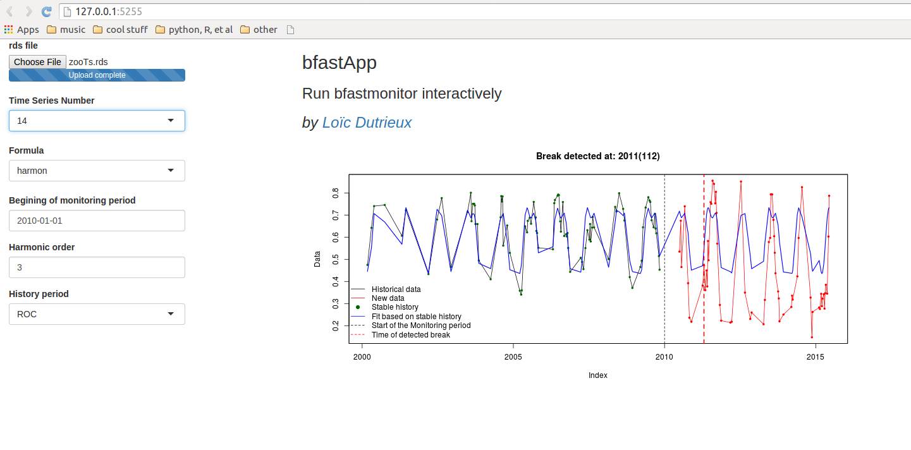
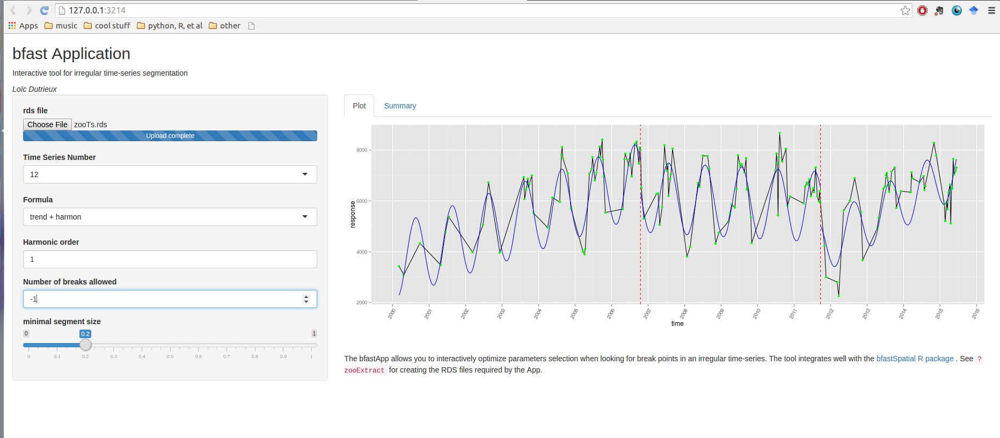

bfastSpatial
Loïc Dutrieux, Ben DeVries
You've just downloaded Landsat data; you're 3 lines of code away from a change map
Why we built bfastSpatial
- Automate things that we were doing routinely
- Streamline pre-processing and analysis
- Because it's fun!!!
Overall it makes dealing with Landsat data for change detection more efficient and more accessible
Classical data pre-processing and analysis chain
- Download the data
- Unpack the data
- Atmospheric correction and orthorectification
- Cloud masking
- Calculation of vegetation indices
- Prepare time-series
- Run algorithm
With bfastSptial we've tried to streamline this process
Enough theory, let's try it!!!
Installation
You need:
- (A recent version of) R
- The devtools package
# install devtools package
install.packages('devtools')
Then we can install the package using the devtools package
# install bfastSpatial from github
devtools::install_github('dutri001/bfastSpatial')
Prepare the session
Create a directory where to store input and output on your computer
# Set path of the project (these directories must exist)
path <- '~/sandbox/changeHungary'
inDir <- file.path(path, 'in')
# Download the archive with the data (~100MB)
download.file('http://www.geo-informatie.nl/dutri001/hungaryData.tar.gz',
destfile = file.path(path, 'hungaryData.tar.gz'))
# Alternative download: https://googledrive.com/host/0B6NK5CdpGEa7ajFuQ1dBZHUwMW8
# Unpack the data
untar(file.path(path, 'hungaryData.tar.gz'), exdir = inDir)
About the data
- These are Surface reflectance Landsat data downloaded via espa
- The full time-series (2000-2015) of a 5x5 km extent was downloaded
- The product already contains vegetation indices (NDVI, NDMI, etc), processed by the USGS
- For a tutorial on how to order data from USGS and download them, refer to the main bfastSpatial tutorial
At the border between Romania and Hungary

Pre-processing
A typical data processing/analysis project has three directories (in, step, out), which we'll need to create
library(bfastSpatial)
# tmp dir is for storing 'invisible' temporary files
# We can use the tmp directory of the raster package
tmpDir <- rasterOptions()$tmpdir
# StepDir is where we store intermediary outputs
stepDir <- file.path(path, 'step')
# ndviDir is a subdirectory of stepDir
# it is where individual NDVI layers will be stored before being stacked
ndviDir <- file.path(stepDir, 'ndvi')
# Ouput directory
outDir <- file.path(path, 'out')
These directories need to already exist before we start pre-processing the data; you can do that manually or by running the following loop
for (i in c(stepDir, ndviDir, outDir)) {
dir.create(i, showWarnings = FALSE)
}
One last check
# Check that we have the right data in the inDir folder
head(getSceneinfo(list.files(inDir)))
Output of getSceneinfo
LC81850272015108 OLI 185 27 2015-04-18
LC81850272015124 OLI 185 27 2015-05-04
LC81860272013125 OLI 186 27 2013-05-05
LC81860272013141 OLI 186 27 2013-05-21
LC81860272013157 OLI 186 27 2013-06-06
LC81860272013173 OLI 186 27 2013-06-22
Everything setup, we can start
processLandsatBatch runs processLandsat in batch mode
# Process NDVI for all scenes of inDir (takes 3-5 minutes on my tiny Lenovo)
processLandsatBatch(x = inDir, outdir = ndviDir, srdir = tmpDir,
delete = TRUE, mask = 'fmask', vi = 'ndvi')
The function returns a list of TRUE, nothing to worry about, it means that everything went well
Let's check the output
head(list.files(ndviDir))
[1] "ndvi.LC81850272015108.grd" "ndvi.LC81850272015108.gri" "ndvi.LC81850272015124.grd"
[4] "ndvi.LC81850272015124.gri" "ndvi.LC81860272013125.grd" "ndvi.LC81860272013125.gri"
Then we need to create the NDVI rasterBrick
# Make temporal ndvi stack
ndviStack <- timeStack(x = ndviDir, pattern = glob2rx('*.grd'),
filename = file.path(stepDir, 'ndvi_stack.grd'),
datatype = 'INT2S')
# Look at object metadata
ndviStack
class : RasterBrick
dimensions : 176, 177, 31152, 397 (nrow, ncol, ncell, nlayers)
resolution : 30, 30 (x, y)
extent : 569805.5, 575115.5, 5275605, 5280885 (xmin, xmax, ymin, ymax)
coord. ref. : +proj=utm +zone=34 +datum=WGS84 +units=m +no_defs +ellps=WGS84 +towgs84=0,0,0
data source : /home/dutri001/Desktop/HungaryData/step/ndvi_stack.grd
names : LE71850272000123, LE71850272000155, LE71850272000235, ...
time : 2000-02-03, 2015-06-12 (min, max)
Run the algorithm
Produce a change map between 2010 (start=) and 2013 (monend=)
# Run bfastmonitor (that part takes a long time)
bfm <- bfmSpatial(x = ndviStack, pptype = 'irregular', start = 2010,
formula = response ~ trend + harmon, order = 3,
mc.cores = 1, filename = file.path(outDir, 'bfm_2010.grd'),
monend = 2013)
The process takes about 20 min (can be monitored with the system.time() function)
formula = is a particularly important parameter to tune, we'll see what influence it may have on the change results when looking at individual pixels
What's the output like?
> bfm
class : RasterBrick
dimensions : 176, 177, 31152, 3 (nrow, ncol, ncell, nlayers)
resolution : 30, 30 (x, y)
extent : 569805.5, 575115.5, 5275605, 5280885 (xmin, xmax, ymin, ymax)
coord. ref. : +proj=utm +zone=34 +datum=WGS84 +units=m +no_defs +ellps=WGS84 +towgs84=0,0,0
data source : /home/dutri001/Desktop/HungaryData/out/bfm_2010.grd
names : layer.1, layer.2, layer.3
min values : 2010.427, -4599.156, NA
max values : 2012.879, 6252.375, NA
From the help page (?bfmSpatial)
By default, 3 layers are returned: (1) breakpoint: timing of breakpoints detected for each pixel; (2) magnitude: the median of the residuals within the monitoring period; (3) error: a value of 1 for pixels where an error was encountered by the algorithm (see try), and NA where the method was successfully run
plot(ndviStack[[204]], col = grey.colors(255), legend = F)
plot(bfm[[1]], add=TRUE)
Utilities: Investigate individual pixel time-series
- bfmPixel() (run bfastmonitor on individual pixels)
- bfmApp (investigate bfastmonitor parameters interactively)
- breakpoints app (Interactive detection of multiple breakpoints)
bfmPixel() example
# Plot a cloud free recent NDVI layer
plot(ndviStack, 394)
# Call bfmPixel in interactive mode
bfmPixel(x = ndviStack, start = 2010, monend = 2013, interactive = TRUE, plot = TRUE)
# Click on a pixel
bfmApp and breakpoints app
These shiny applications allow to investigate single time-series interactively
They require an rds file as input, which can be easily created using the zooExtract() function:
# Sample regular points over the extent of the data
sp <- sampleRegular(ndviStack, size = 100, sp = TRUE)
# Extract the time-series corresponding to the locations of the sample points
# and store the multiple time-series object in the stepDir of the project
zooTs <- zooExtract(x = ndviStack, sample = sp,
file = file.path(stepDir, 'zooTs.rds'))
There is also a set of dependencies required to run the apps
install.packages('shiny', 'zoo', 'bfast', 'strucchange', 'ggplot2',
'lubridate', 'dplyr')
bfmApp
library(shiny)
runGitHub('dutri001/bfmApp')

But sometimes dynamics are more complex
breakpoints app
runGitHub('dutri001/bfastApp')

And what about validation?
We have a tool for that too; try timeSyncR for visual interpretation of time-series
Conclusion
- Early steps of the pre-processing are very standard and can be automated
- It's easy to produce a change map
- But a good change map requires local tuning
- Spend some time looking at individual pixels
- Keep your projects well structured
Where to find help
- Github project page
- Main tutorial
- Wageningen change monitor web page
- Mail us (Ben and I)
Code used for this session